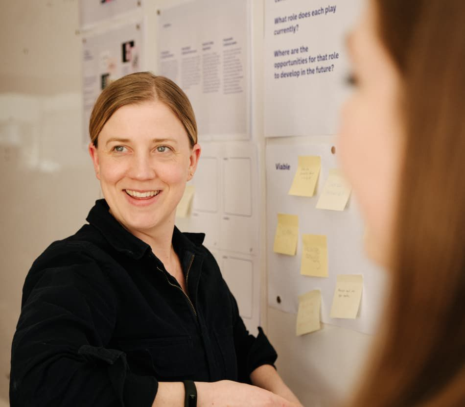
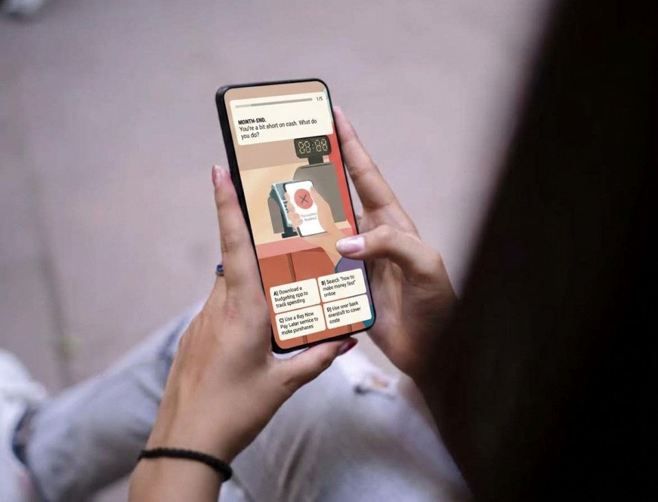
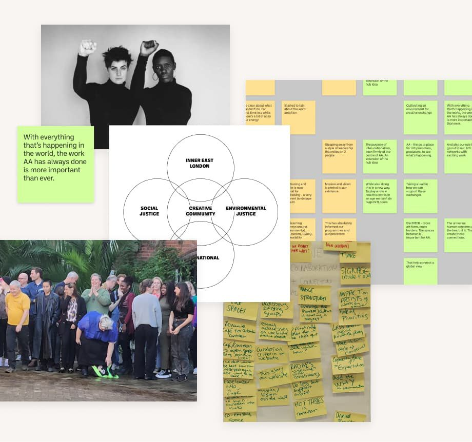
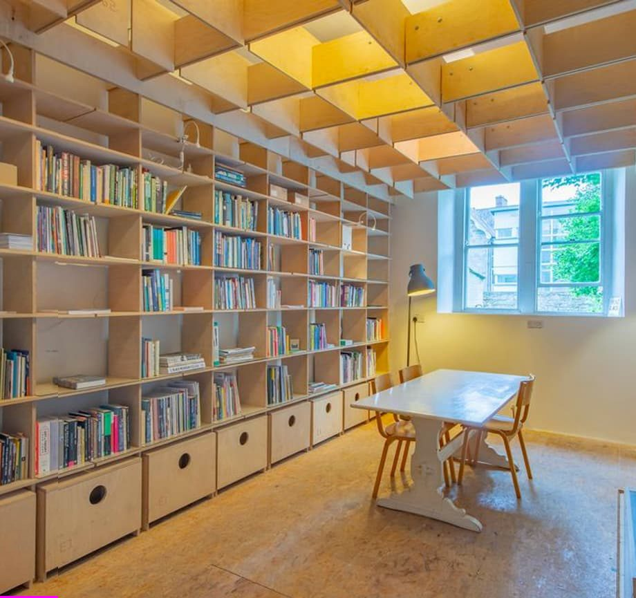
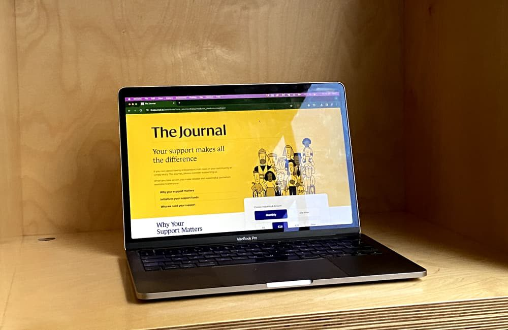
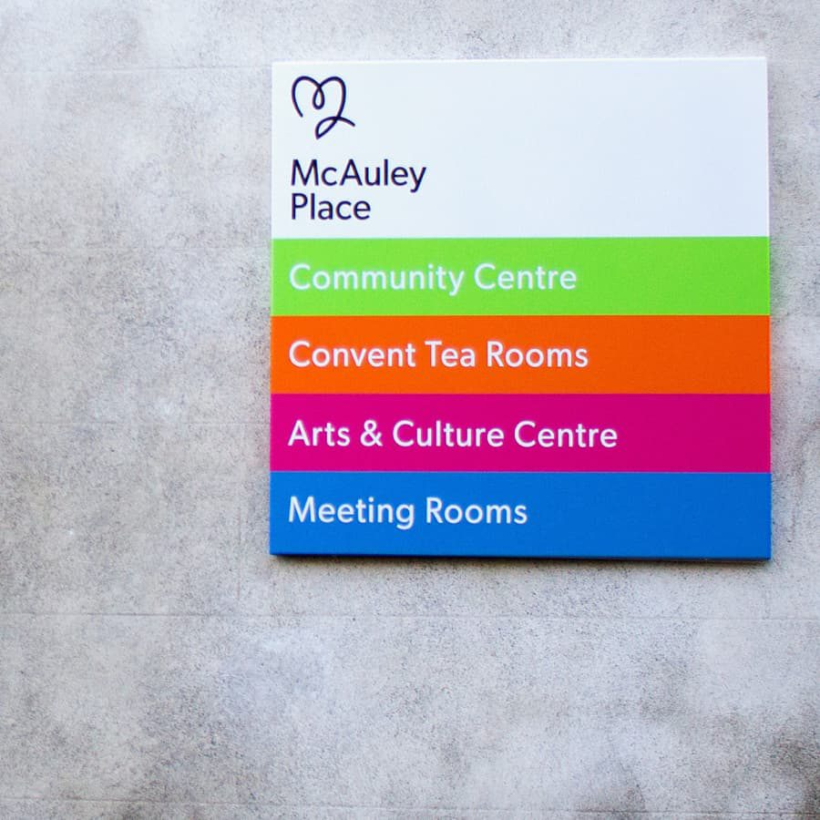
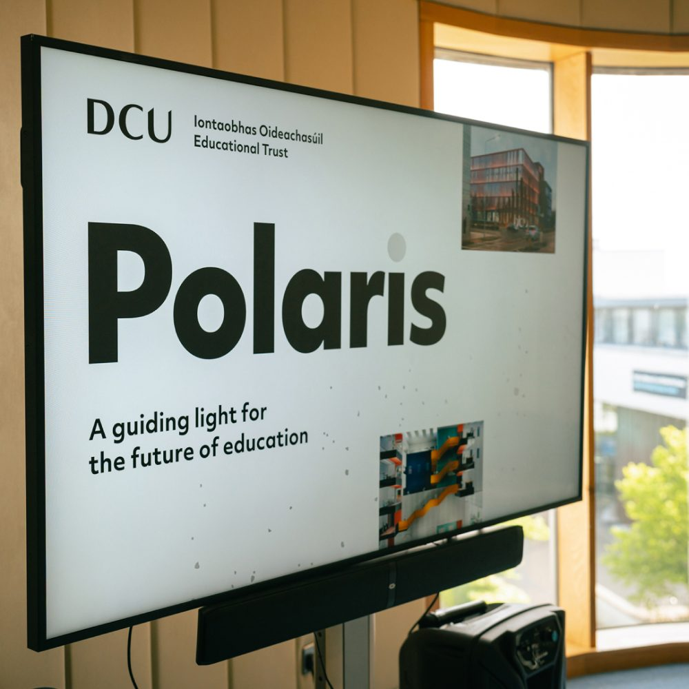
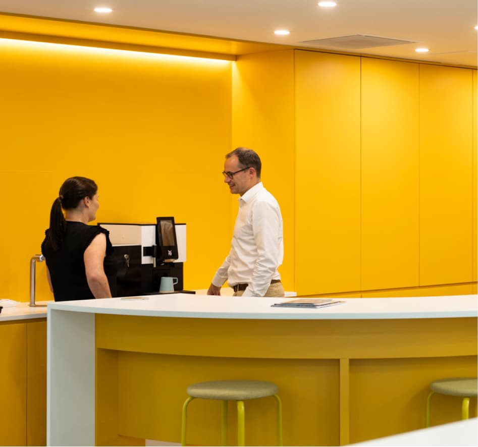

Labs
An innovation starter kit for Tailte Éireann’s 1,100 staffAn innovation starter kit for Tailte Éireann’s 1,100 staff
Tailte Éireann
You’re following our work. We’ll write to when something is added.
LabsStrategyBrandDigital

Central Bank of Ireland











Nothing like that yet.

Want to see work like yours?
Johnny Kelly, Managing Director